MSE 125 — Applied Statistics
Wednesday, May 13, 2026
your book: S&P 100 stocks.
last March: every name crashed together
CIO asks: what risk are we really exposed to?
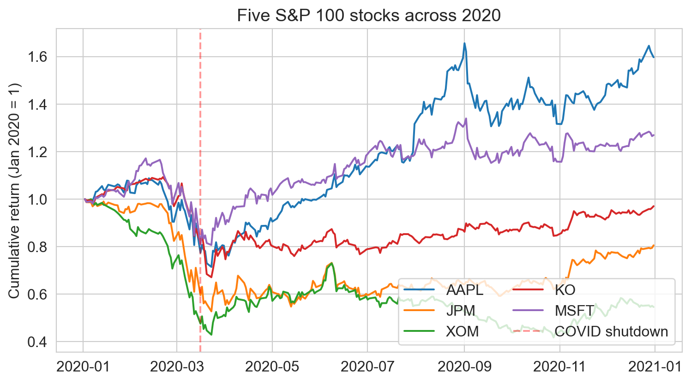
| regression / classification | PCA | |
|---|---|---|
| input | features X + label y | features X only |
| goal | predict y from X | summarize X in k \ll p dims |
| evaluation | held-out prediction error | (today: held-out portfolio variance) |
| family | supervised | unsupervised |
no y, no “right answer”. the algorithm finds structure on its own.
the picture: best line, best subspace
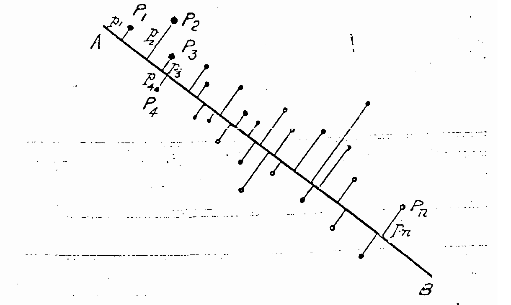
Pearson, Phil. Mag. 1901
given a cloud of points, what line minimizes the sum of squared perpendicular distances from points to the line?
Pearson answered this in any number of dimensions
— just elementary geometry
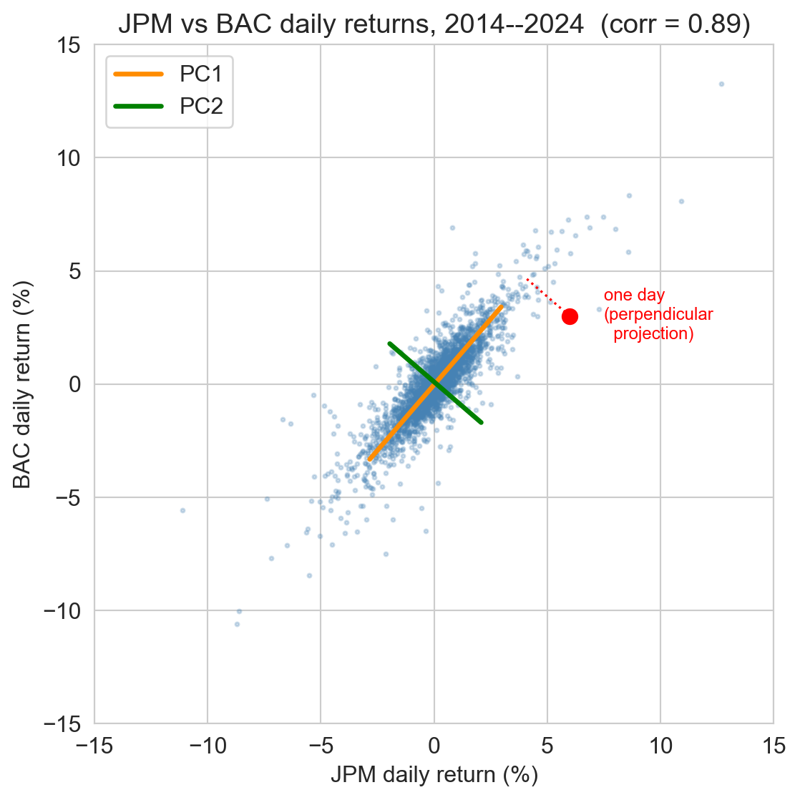
# 2x2 covariance, then top eigenvector (sorted largest first)
C = np.cov(jpm_centered, bac_centered, ddof=1)
eigvals, eigvecs = np.linalg.eigh(C)
order = np.argsort(eigvals)[::-1]
v1 = eigvecs[:, order[0]] # PC1 direction
# project the example day onto PC1
score = (np.array([6.0, 3.0]) - mean_xy) @ v1the data matrix X has shape n \times p — rows = 2770 days, columns = 95 stocks
now what? in 2D we drew a picture. in 95D we run the same eigendecomposition (or its rectangular cousin, the SVD — coming up).
predict before we run it.
we run PCA on the 95 stocks without standardizing (raw returns).
which stocks dominate PC1?
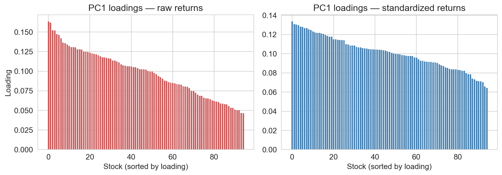
top 5 by |PC1 loading|
| raw | standardized | ||
|---|---|---|---|
| AMD | 0.164 | BLK | 0.134 |
| NVDA | 0.162 | HON | 0.131 |
| COF | 0.153 | MS | 0.131 |
| TSLA | 0.152 | JPM | 0.130 |
| BA | 0.148 | C | 0.128 |
→ raw: semis, EV, aerospace — the loud names, top 5 hold ~12%
→ standardized: financials — the most market-correlated, top 5 hold ~8.5% (baseline 5.3%)
standardization (z-score)
subtract each feature’s mean, divide by its standard deviation
z_{ij} = \frac{x_{ij} - \mu_j}{\sigma_j}
after standardization, every column has mean 0 and variance 1
→ PCA finds structure in the correlations, not the raw magnitudes
→ for returns, this is almost always what we want
reading the components
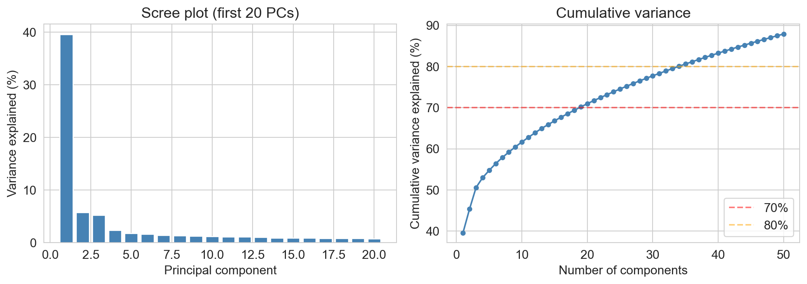
elbow method
choose k where the scree bars stop dropping quickly — the bend in the plot
Warning
the elbow can mislead. on real data, even a sharp elbow may not pick the k that wins on a downstream task.
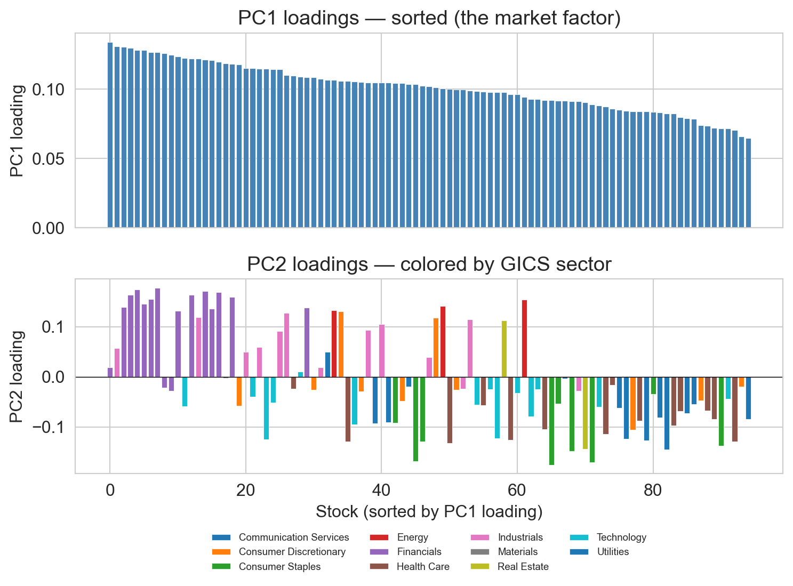
top: every stock loads positively → PC1 is the common up-down move
bottom (PC2, sectors): financials + energy on top; staples + utilities on bottom
→ PC2 = cyclicals vs defensives
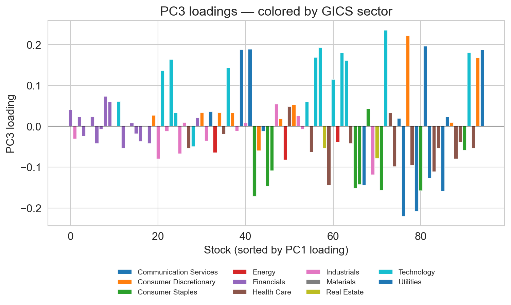
positive: NVDA, AMZN, META, GOOGL, ADBE — growth tech
negative: utilities (DUK, SO), staples (KO), high-dividend telecom (VZ) — yield
by PC5 or PC6, the economic story runs out
we have named factors. did PCA work?
PC1 looks like the market. PC2 splits cyclicals from defensives. PC3 splits growth from yield.
have we proved PCA worked on the S&P 100?
discuss with your neighbor (3 min).
PCA (variational form)
among all k-dimensional subspaces of \mathbb{R}^p, PCA picks the one closest to the data:
S^\star = \arg\min_{\dim S = k}\; \sum_{i=1}^n \|x_i - P_S x_i\|^2
equivalently (by Pythagoras, after centering): the subspace that maximizes the total variance of the projections
with k=1: the best line through the cloud (Pearson’s picture)
with k=2: the best plane. with k general: the best k-dim subspace.
data matrix X \in \mathbb{R}^{n \times p} — row i = x_i
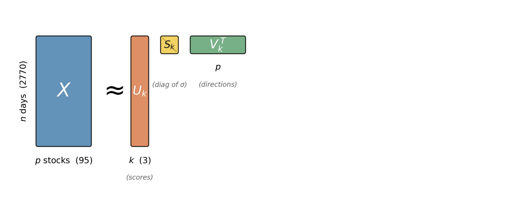
| symbol | size | meaning |
|---|---|---|
| V_k | p \times k | principal directions — basis for S^\star |
| U_k S_k | n \times k | projected scores — each row = one day’s coordinates |
| \Lambda_k = S_k^2/(n{-}1) | k \times k | PC variances |
→ truncated SVD = best rank-k approximation to X in Frobenius error (Eckart–Young–Mirsky)
PCA() is the truncated SVDU, S_svd, Vt_svd = np.linalg.svd(Z, full_matrices=False)
# Match up to a sign per component (sign of a PC is arbitrary)
signs = np.sign((Vt_svd[:3] * pca.components_[:3]).sum(axis=1))
print("max difference in directions:",
np.abs(Vt_svd[:3] * signs[:, None] - pca.components_[:3]).max())
print("max difference in variances:",
np.abs(S_svd[:3]**2 / (n-1) - pca.explained_variance_[:3]).max())PCA() and np.linalg.svd give the same answer to numerical precision
the payoff: portfolios in the p > n regime
→ cutting volatility while holding return constant grows real wealth over time
→ low-volatility ETFs and pension-fund mandates: this is exactly their target
full Markowitz problem trades off return and variance; we focus on variance because that’s where covariance estimation — and PCA — bites
minimize portfolio variance, subject to weights summing to 1:
\min_w \, w^T \Sigma w \quad \text{s.t.} \quad \mathbf{1}^T w = 1
closed form: w_{\text{min-var}} \propto \Sigma^{-1} \mathbf{1}
read it qualitatively:
→ to use this, we need \Sigma — and to invert it
Markowitz, J. Finance 1952
60-day window with 95 stocks: p = 95, n = 60
sample covariance is rank-deficient
59 nonzero eigenvalues out of 95 → singular → inverse doesn’t exist
even with a tiny ridge (\lambda = 10^{-6}), the “min-variance” portfolio is unusable:
| max single-stock weight | +32% |
| min single-stock weight | −29% |
| gross exposure (long + short) | 809% |
| max weight change after shifting window 1 day | 9% per stock |
→ not investable — we need a structured estimate of \Sigma
approximate \Sigma as k factors + diagonal noise:
\hat\Sigma_k = V_k \Lambda_k V_k^T + \mathrm{diag}(D)
→ \hat\Sigma_k^{-1} exists, plugs cleanly into Markowitz
→ how big should k be? ask cross-validation
| method | formula | role |
|---|---|---|
| equal-weight | w = \mathbf{1}/p | baseline (no covariance) |
| ridge sample | \Sigma + \lambda I | invertibility hack |
| random projection | random V_k + diag correction | sanity check |
| PCA factor | top-k PC factors + diag correction | the contender |
we backtest with walk-forward evaluation — train on the past, hold for the next 21 days, slide
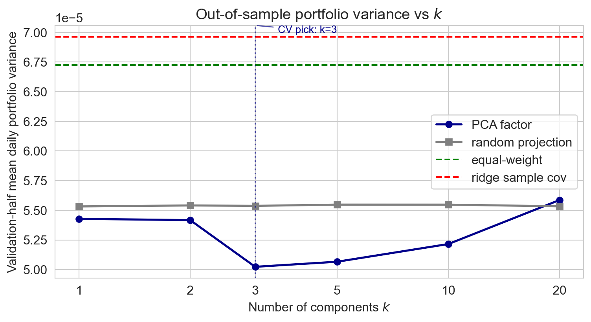
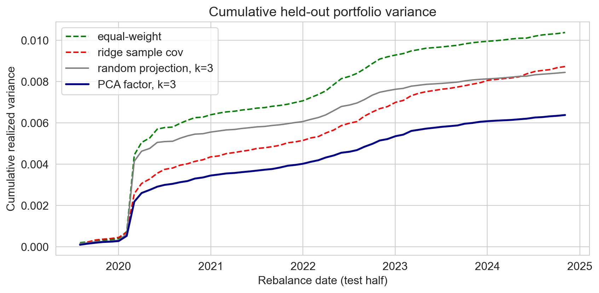
PCA factor portfolio sits lowest the entire test period
every method jumps at COVID; PCA’s jump is smallest
PC1 = market, PC2 = cyclicals / defensives, PC3 = growth / yield
→ a clean story. but a story is not the test.
the test: held-out portfolio variance, on data we never used to fit
→ pick the model that wins on the task you care about
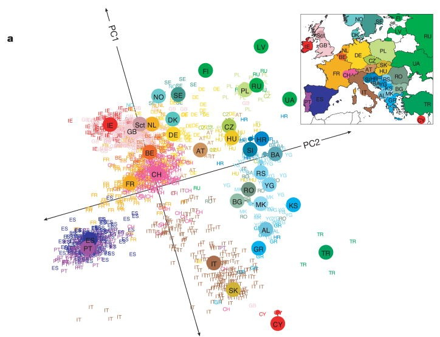
197K SNPs, 1,387 Europeans
no geographic info given to the algorithm
→ it drew a map of Europe (r^2 \approx 0.7)
. . .
→ math result: PCA on spatial data with distance-decaying similarity generically produces these patterns
→ recovering an obvious pattern is not evidence of hidden structure
Novembre 2008; Novembre & Stephens 2008
PCA or pick five?
instead of computing principal components, could we just pick the five best stocks and form a portfolio from them?
when would PCA be the right move? when would a sparse subset (Lasso) be the right move?
discuss with your neighbor (3 min).
what to watch:
PCA compresses each row into continuous coordinates in a k-dim subspace
K-means compresses each row into one of k discrete labels
same compress-into-k idea, different geometry
→ Monday: K-means on Airbnb (and the same “your features pick your structure” lesson, on a different method)
what worked? what didn’t? what’s still confusing?